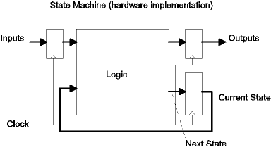
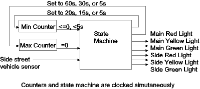

| Previous Appendix | Next Appendix | Index | Search the Text |
We will now investigate using the Real Time Interrupt to implement a state machine in software.
The use of state machines in control applications is an accepted and well defined practice. A general block diagram of a Moore class state machine follows:

The state machine consists of a combinational logic block and a set of latches to synchronize operation to a clock. The inputs to the state machine are latched to avoid race conditions while the outputs are latched to avoid glitches. The current state of the state machine is represented by the value stored in a third set of latches. The current state along with the value of the latched inputs determines the next state and next output values, which are captured with the next active clock edge.
To implement a state machine in software, we first need a clock. The easiest clock to use is the Real Time Interrupt. When the RTI interrupt service routine is entered, this can represent the occurrence of the active clock edge. Just as the signals must propagate through the combinational logic before the next clock in the hardware implementation, we must process and calculate our next state before the next RTI interrupt in the software implementation.
A software process is associated with state, which consists of the variables used by the process along with the PC location. In an interrupt driven system, an interrupt service routine can be considered to be a process if it maintains its own set of variables. The main program, the one started when the processor is reset, is also a process, the main process. In most interrupt driven systems, the main process does nothing but sit in an idle loop waiting for interrupts to occur. In this case, it is referred to as the idle process. The processor switches between processes (interrupt service routines and the idle process) each of which has its own set of variables and program counters. Except for the idle process, control switches between processes when the service routine returns and before the service routine is entered.
In implementing a state machine, the machines state is represented by a value in a variable. When the service routine is entered, the code to be executed is dependent on the current state value. If the state value is the address of the start of the code that should be executed for the state, then the service routine can dispatch to the correct code using a jmp 0,x instruction where the contents of the state variable have been loaded into index register X. The code sets the next state by storing the address of the new state's code into the state variable, and then returns from the interrupt. When the next interrupt occurs, execution is dispatched to the new state's code.
To examine software state machines we will study an example of a traffic light controller. This is a common exercise in state machine design. Apologies are given in advance to anyone actually involved with traffic light design - this is a very contrived example!

The design consists of a state machine (with four states), two external down counters with choice of reset values, a vehicle sensor for the side street, and a standard traffic light with red, yellow, and green bulbs for each direction. The operation of the state machine is as follows:
I'll leave it as an exercise for some other course to design the state machine in hardware. Instead I'll present the program which does it in software. The program is part017a.asm, which can be run using the Dragon12-Plus or on the simulator with the D-Bug12 emulator loaded as well. This program is modified from that shown below so that all the light times are 1/10 of what is shown here, making the simulation run faster. The program uses Port B to drive the traffic light (through appropriate relays to handle the high voltages and currents) as well as port H to connect to the side street vehicle sensor. Using the Dragon12-Plus, the side street sensor is pushbutton PH0, while the row of LEDs is used for the lights. Here is the code, with comments:
; Traffic Light State Machine -- Example for Part 017a of text ; Author: Tom Almy #include registers.inc ; Equates for addresses of hardware registers ; We will use Port H to to connect to the side street car sensor SENSOR equ %1 ; Sensor will be LSB ; We will use port B to connect to the traffic light REDM equ %100000 ; Red light on main street YELM equ %10000 ; Yellow light on main street GRNM equ %1000 ; Green light on main street REDS equ %100 ; Red light on side street YELS equ %10 ; Yellow light on side street GRNS equ %1 ; Green light on side street ; Light durations (expressed in multiples of of the 65.536 msec interrupt rate) MAXMAIN equ 60*1000000/65536 ; 60 seconds maximum for main green MINMAIN equ 20*1000000/65536 ; 20 seconds minimum for main green MAXSIDE equ 30*1000000/65536 ; 30 seconds maximum for side green MINSIDE equ 15*1000000/65536 ; 15 seconds minimum for side green BMPTIME equ 5*1000000/65536 ; New minimum time if car hits sensor on side green MAXYELL equ 5*1000000/65536 ; Yellow time
EQU statements are used to define constants for the port interface as well as light durations.
; org $FFF0 ; Set interrupt vector (no D-Bug12) ; dw rtiint
This would need to be uncommented if D-BUG12 not used (program is in Flash EEPROM).
org DATASTART ; Data Memory (internal RAM) ; State information of traffic light control process state: ds 2 ; Current state pointer maxctr: ds 2 ; Maximum time counter minctr: ds 2 ; Minimum time counter
The state of the state machine process is held in three words, two for the counters and the third being the state variable, the address of the code to execute for the current state.
org PRSTART ; Program memory (external, could be ROM)
entry: ; Program starts here
; Initialization code
lds #DATAEND ; Initialize stack pointer
movw #GREENRED state ; Initialize state machine state
movw #MAXMAIN maxctr
movw #MINMAIN minctr
bset CRGINT #$80 ; Enable RTI (RTIE=1)
movb #%01110111 RTICTL ; Enable Real time interrupts, set rate to 65.536ms
movw #rtiint UserRTI ; Set interrupt vector using D-BUG12
movb #(REDM|YELM|GRNM|REDS|YELS|GRNS) DDRB ; Set Port B output pins
movb #2 DDRJ ; Enable LEDs
cli ; Enable interrupts
The value for RTICTL is correct for an 8 MHz crystal. Standard initialization code to initialize the state machine process, port B, (port H defaults to input) the RTI interrupt, and enable interrupts.
; Idle process (only waits for interrupts)
idle: wai
bra idle
The idle process does nothing. For a real traffic light it would be sensible to use the COP watchdog here so that failure of the code can be used to restart the processor. Nobody likes dead traffic lights!
; RTI Interrupt -- steps the traffic light state machine
rtiint: movb #$80 CRGFLG ; clear the RTI flag
ldx state ; jump to current state
jmp 0,x
After clearing RTI flag we could do a cli to allow other interrupts, however there are no other interrupts in this application. We jump to the appropriate code, one of GREENRED, YELLOWRED, REDGREEN, or REDYELLOW.
GREENRED: ; State where Main is green and side is red
movb #GRNM|REDS PORTB ; Make sure correct lights are on
ldd maxctr ; Decrement maxctr and see if it is zero
subd #1
std maxctr
beq gotoYELLOWRED ; If zero, change state
ldd minctr ; Decrement minctr and see if it is <=0
subd #1
std minctr
bgt finished ; Greater -- state in this state
brclr PTIH #SENSOR finished ; Also stay if sensor off
gotoYELLOWRED: ; Advance to YELLOWRED state
movw #YELLOWRED state ; Set next state
movw #MAXYELL maxctr ; Reset maxctr for yellow time
finished:
rti
The code for each state needs to advance the counters, determine outputs, and set the next state if it changed. The code should implement the state machine description, above. There is one change in that the lights are controlled by the current state rather than being a function of the next state. This saves some code space and does not affect operation.
YELLOWRED: ; Main is Yellow, Side is Red
movb #YELM|REDS PORTB ; Make sure correct lights are on
ldd maxctr ; Decrement maxctr and see if it is zero
subd #1
std maxctr
bne finished ; more time -- stay in state
movw #REDGREEN state ; No more time, set next state
movw #MAXSIDE maxctr ; Reset maxctr and minctr
movw #MINSIDE minctr
rti
The coding style for each state is basically the same. Since only maxctr is used when the light is yellow, minctr is not decremented.
REDGREEN: ; Main is Red, Side is Green
movb #REDM|GRNS PORTB ; Make sure correct lights are on
ldd maxctr ; Decrement maxctr and see if it is zero
subd #1
std maxctr
beq gotoREDYELLOW ; If zero, change state
ldd minctr ; Decrement mincnt
subd #1
std minctr
; Check for presence of car and adjust
; minctr if necessary
cpd BMPTIME ; If minctr>BMPTIME then don't do anything
bgt finished
brclr PTIH #SENSOR noadj ; If sensor on, then adjust time, stay in state
movw #BMPTIME minctr
rti
noadj: cpd #0 ; Mintime not yet reached?
bgt finished ; Then stay in state
gotoREDYELLOW: ; Advance to REDYELLOW state
movw #REDYELLOW state ; Set next state
movw #MAXYELL maxctr ; Reset maxctr for yellow time
rti
REDYELLOW: ; Main is Red, Side is Yellow
movb #REDM|YELS PORTB ; Make sure correct lights are on
ldd maxctr ; Decrement maxctr and see if it is zero
subd #1
std maxctr
bne finished ; more time -- stay in state
movw #GREENRED state ; Set next state
movw #MAXMAIN maxctr ; Reset maxctr and minctr for new times
movw #MINMAIN minctr
rti
Continue with Implementing a De-bounced Keyboard
Return to the Index.